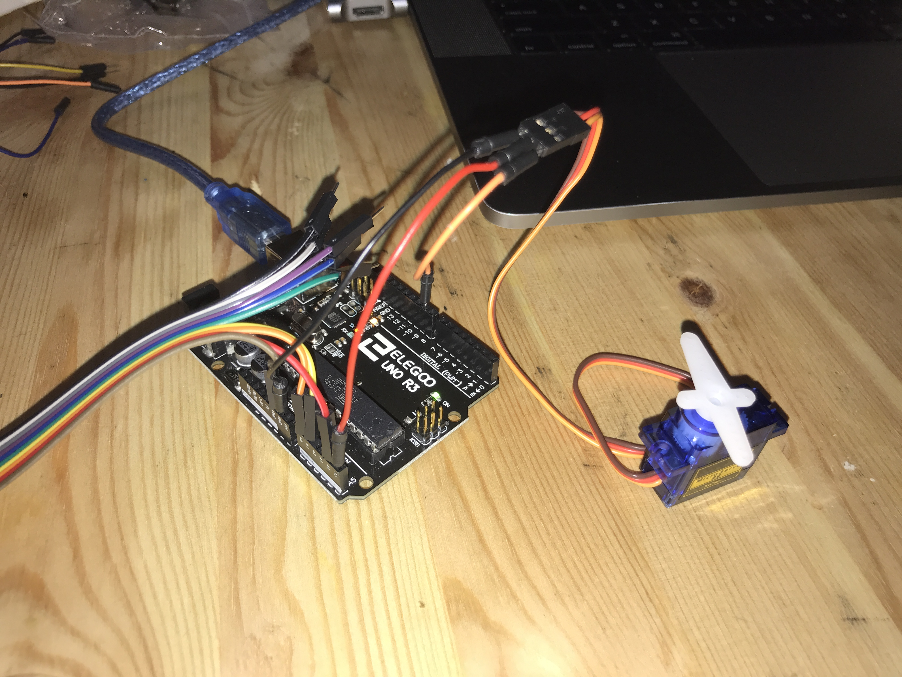
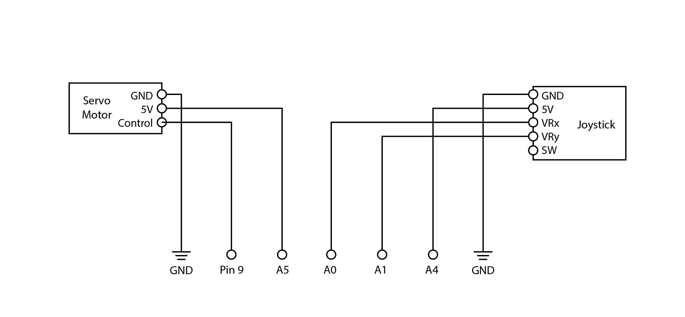
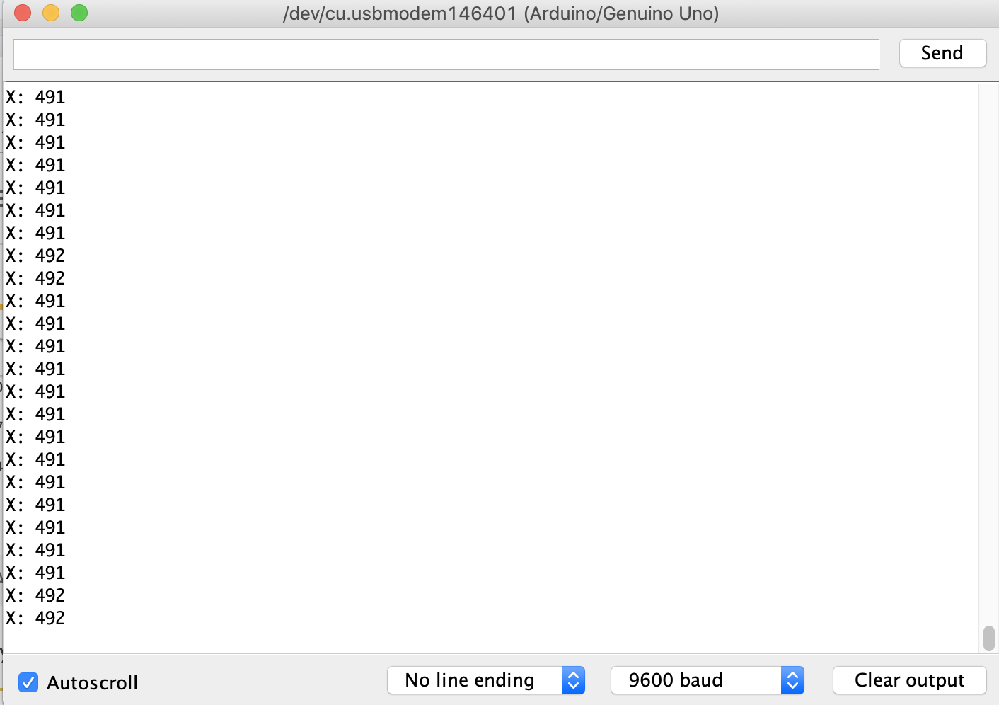

Pari Gabriel's Assignment 5!
Here is all the documentation for assignment 5.
 Circuit
 Schematic
#include
Servo myServo; // create a servo object
int xPosition = 0;
int yPosition = 0;
int outputValue = 0;
const int xPin = A0;
const int yPin = A1;
const int powerPin = A4;
const int servoPower = A5;
const int servoControl = 9;
const int initialPosition = 90;
void setup() {
// put your setup code here, to run once:
pinMode(xPin, INPUT);
pinMode(yPin, INPUT);
pinMode(powerPin, OUTPUT);
digitalWrite(powerPin, HIGH);
pinMode(servoPower, OUTPUT);
digitalWrite(servoPower, HIGH);
myServo.attach(servoControl); // attaches the servo on pin 9 to the servo object
myServo.write(initialPosition);
Serial.begin(9600);
}
void loop() {
// put your main code here, to run repeatedly:
xPosition = analogRead(xPin);
myServo.write(xPosition/10);
Serial.print("X: ");
Serial.println(xPosition);
delay(100);
}
 The values output to the serial monitor from the joystick.
 The circuit in action.
The circuit in action.
const int analogInPin = A0; // IN pin does not need to change
const int ledPin = 9; // LED connected to digital pin 9
int sensorValue = 0; // value read from the photoresistor
int outputValue = 0; // value output to the PWM (analog out)
void setup() {
pinMode(analogInPin, INPUT); // set analogInPin A0 as an input
Serial.begin(9600); // initialize serial communications at 9600 bps
}
void loop() {
sensorValue = analogRead(analogInPin); // set sensorValue as the value read by analogInPin
Serial.println(sensorValue); // display the sensorValue on the serial monitor
outputValue = map(sensorValue, 830, 920, 0, 120); // map the outputValue from the sensorValue
analogWrite(ledPin, outputValue); //set brightness of ledPin as the outputValue
// print the results to the serial monitor
Serial.print("sensor = ");
Serial.print(sensorValue);
Serial.print("\t output = ");
Serial.println(outputValue);
}
The code snippet.